Робот,
давай дружить!
Один кубик может стать телом, головой или рукой. Меняй его размер и место, а потом придумай своему роботу имя!
 Меня зовут Бип!
Меня зовут Бип!
Один кубик — разные детали
Форма остаётся знакомой. Большой куб станет телом, маленький — головой. Передвинь такой же куб в сторону — получится рука.
Представь: что изменится, если голова станет огромной? Можно показать руками, сказать или попробовать в Blender.
Познакомься с кубиком
Сегодня два одинаковых по форме кубика станут телом и головой. Измени размер одного и поставь его выше другого. Каким будет твой друг: высоким, широким или совсем крошечным?

Большой + маленький
Это схема из простых форм. Размеры выбираешь ты. Серый робот — тоже отличный робот!
-
Осмотрись вокруг
Открой Blender вместе со взрослым. Закрой стартовую заставку щелчком рядом с ней. Видишь куб? Нажми на него — появится оранжевая обводка. Покрути колёсико мыши, чтобы приблизиться и отдалиться.
Хочу посмотреть с другой стороны
Зажми среднюю кнопку мыши (колёсико) и немного подвигай мышь. Ты ходишь вокруг куба, а сам куб стоит на месте. Нет такой мыши? Потяни мышью за цветные оси в правом верхнем углу рабочей области.
Покажи мне: осмотреть куб
Настоящий Blender 5.2. Нажми на картинку, чтобы рассмотреть её крупнее. Твоя модель может выглядеть иначе.
-
Посмотри с другой стороны

Зажми колёсико и подвигай мышь. Или потяни за цветные оси в правом верхнем углу.
Проверь: Теперь видны другие стороны того же кубика.
Покажи мне: выбрать и приблизить куб
Настоящий Blender 5.2. Нажми на картинку, чтобы рассмотреть её крупнее. Твоя модель может выглядеть иначе.
-
Щёлкни по кубу
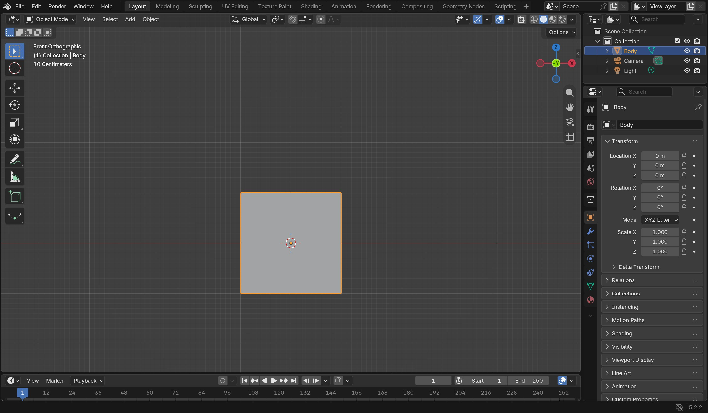
Нажми левой кнопкой мыши прямо на куб. На фото выбранное тело обведено оранжевым. Здесь мы смотрим спереди, поэтому куб похож на квадрат.
Проверь: Вокруг нужной детали появилась оранжевая обводка.
-
Подойди поближе
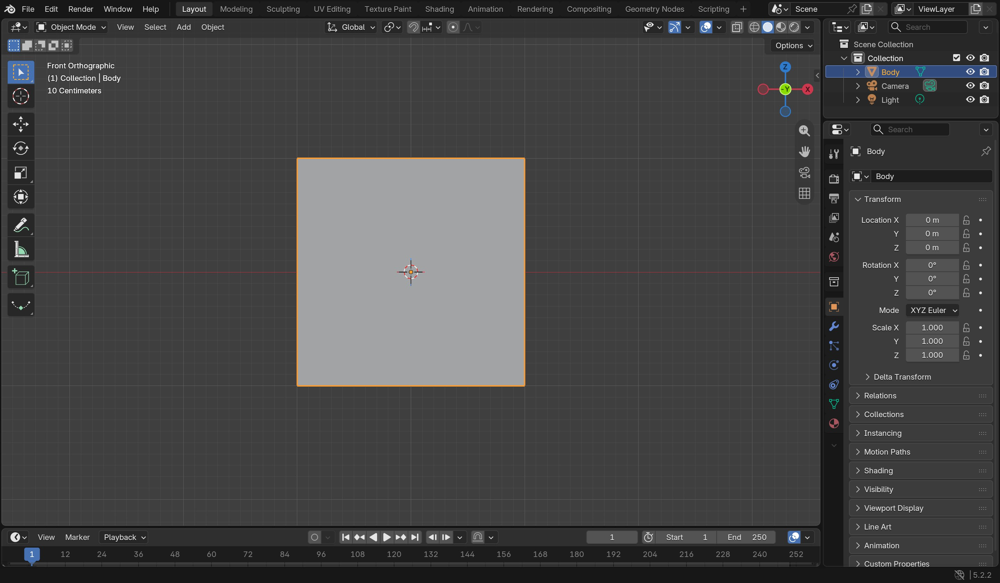
Наведи мышь на рабочую область и покрути колёсико. Куб станет крупнее на экране.
Проверь: Меняется только твой вид; сам куб не становится больше.
-
-
Кубик становится телом
Наведи мышь на большую рабочую область. Нажми S и подвигай мышь: куб растёт и уменьшается. Щёлкни левой кнопкой, чтобы выбрать размер. Попробуй сделать забавное широкое тело.
Если получилось не так
Пока движение не закончено, нажми Esc, чтобы отменить его. После щелчка: меню Edit → Undo (Правка → Отменить). Чтобы растянуть куб только по ширине, попробуй S, затем X, подвигай мышь и щёлкни. Это необязательно.
Покажи мне: отменить действие и растянуть куб
Настоящий Blender 5.2. Нажми на картинку, чтобы рассмотреть её крупнее. Твоя модель может выглядеть иначе.
-
Edit → Undo — шаг назад

В верхней строке открой Edit и выбери Undo. Если ты ещё двигаешь деталь и не щёлкнул, просто нажми Esc.
Проверь: Последнее действие отменилось.
-
S, затем Z — вытягивай

Выбери руку. Нажми S, затем Z, подвигай мышь и щёлкни. Для ширины тела используй S, затем X.
Проверь: Деталь вытянулась только в одном направлении.
Покажи мне: изменить размер
Настоящий Blender 5.2. Нажми на картинку, чтобы рассмотреть её крупнее. Твоя модель может выглядеть иначе.
-
S — меняй размер
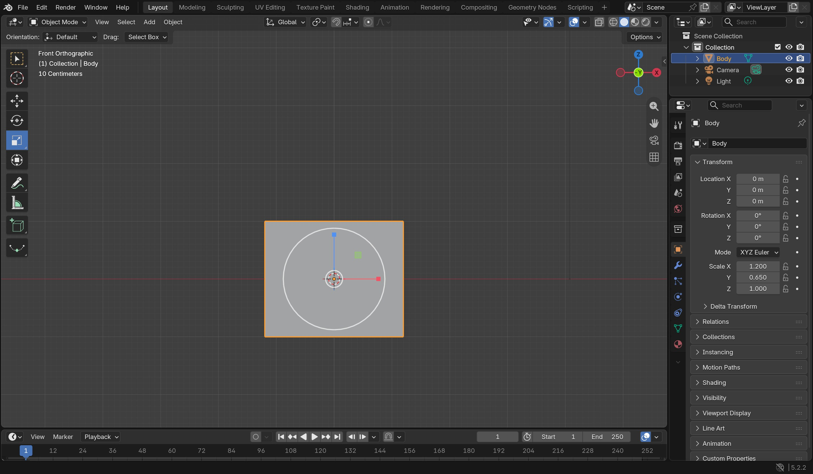
Выбери куб. Нажми S, подвигай мышь и щёлкни. На фото тело уже широкое: чтобы растянуть только вбок, нажми S, затем X.
Проверь: Объект действительно изменил размер, а оранжевая обводка осталась.
-
-
Добавь голову
Вверху рабочей области нажми Add → Mesh → Cube (Добавить → Сетка → Куб). Новый куб выбран. Нажми G, затем Z, подвигай мышь вверх и щёлкни. Уменьши голову с помощью S.
Куда делся новый куб?
Он появился в середине сцены и может прятаться внутри первого. Не щёлкай по другому объекту: сразу нажми G, затем Z и подними новый куб. Z — движение вверх и вниз. Чтобы видеть спереди, выбери View → Viewpoint → Front. Цифровая клавиатура не нужна.
Покажи мне: посмотреть спереди
Настоящий Blender 5.2. Нажми на картинку, чтобы рассмотреть её крупнее. Твоя модель может выглядеть иначе.
-
Открой View → Viewpoint

Найди меню View над рабочей областью, затем пункт Viewpoint.
Проверь: Откроется список направлений, откуда можно посмотреть.
-
Front — спереди, Right — сбоку

Нажми Front, чтобы смотреть на лицо. Right покажет робота сбоку. Это поворачивает твой взгляд, а не модель.
Проверь: Над рабочей областью написано Front Orthographic или Right Orthographic.
Покажи мне: добавить куб и поднять голову
Настоящий Blender 5.2. Нажми на картинку, чтобы рассмотреть её крупнее. Твоя модель может выглядеть иначе.
-
Открой Add → Mesh
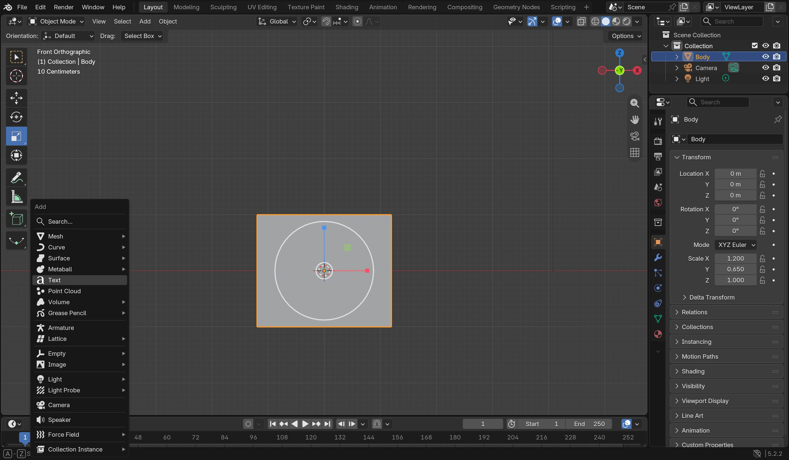
Найди Add над рабочей областью. Наведи на Mesh — откроется список форм.
Проверь: В списке форм можно найти Cube и UV Sphere.
-
Выбери Cube
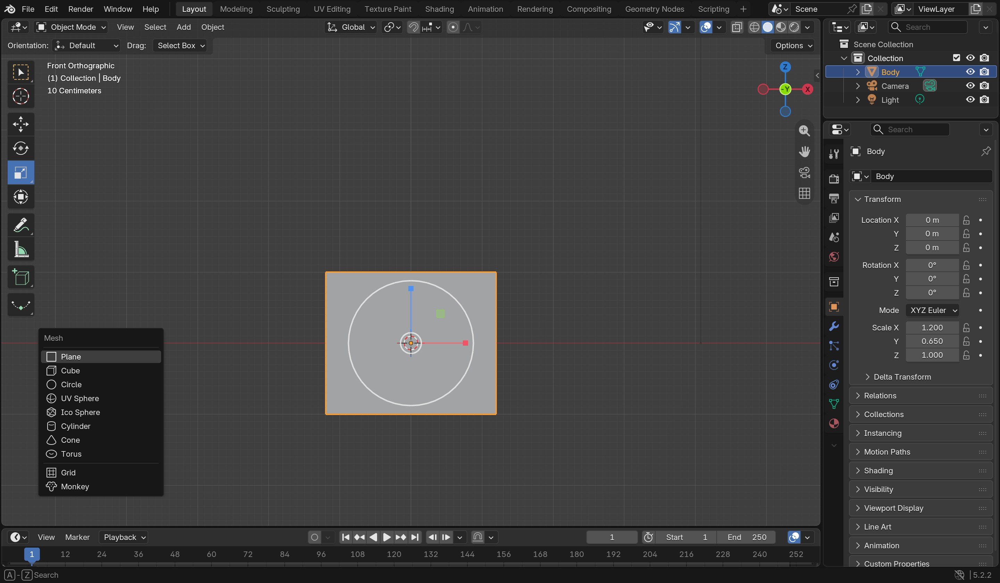
В меню Mesh нажми Cube. Новый куб появится в центре и сразу будет выбран.
Проверь: Появился ещё один куб. Пока он может прятаться внутри тела.
-
G, затем Z — подними голову

Не снимая выделения с нового куба, нажми G, затем Z. Подвинь мышь вверх и щёлкни. S поможет уменьшить голову. На фото показан готовый результат, а не момент нажатия клавиш.
Проверь: Голова находится над телом; на фото синяя стрелка показывает вертикаль Z.
-


☀ Минутка без экрана. Встань и покажи, как ходит большой робот. А теперь — совсем маленький!
Сохранить робота и продолжить в другой день
Вместе со взрослым выбери File → Save As (Файл → Сохранить как). Выбери свою папку, назови файл robot.blend и нажми Save As. В следующий раз: File → Open и этот файл. Если он уже сохранён, достаточно File → Save.
Покажи мне: сохранить и снова открыть
Настоящий Blender 5.2. Нажми на картинку, чтобы рассмотреть её крупнее. Твоя модель может выглядеть иначе.
-
File → Save As
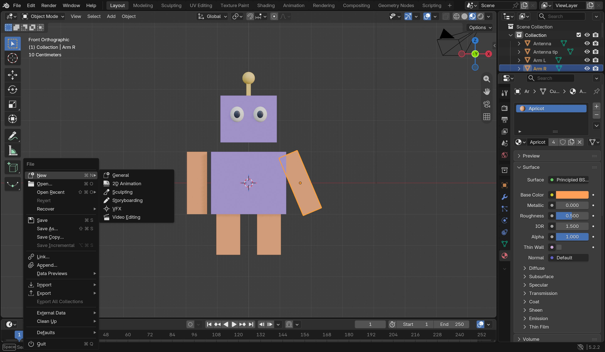
Открой File в самом верхнем левом углу и выбери Save As. Для уже сохранённого файла достаточно Save.
Проверь: Открылось окно, где можно выбрать папку и имя файла.
-
Назови и сохрани файл
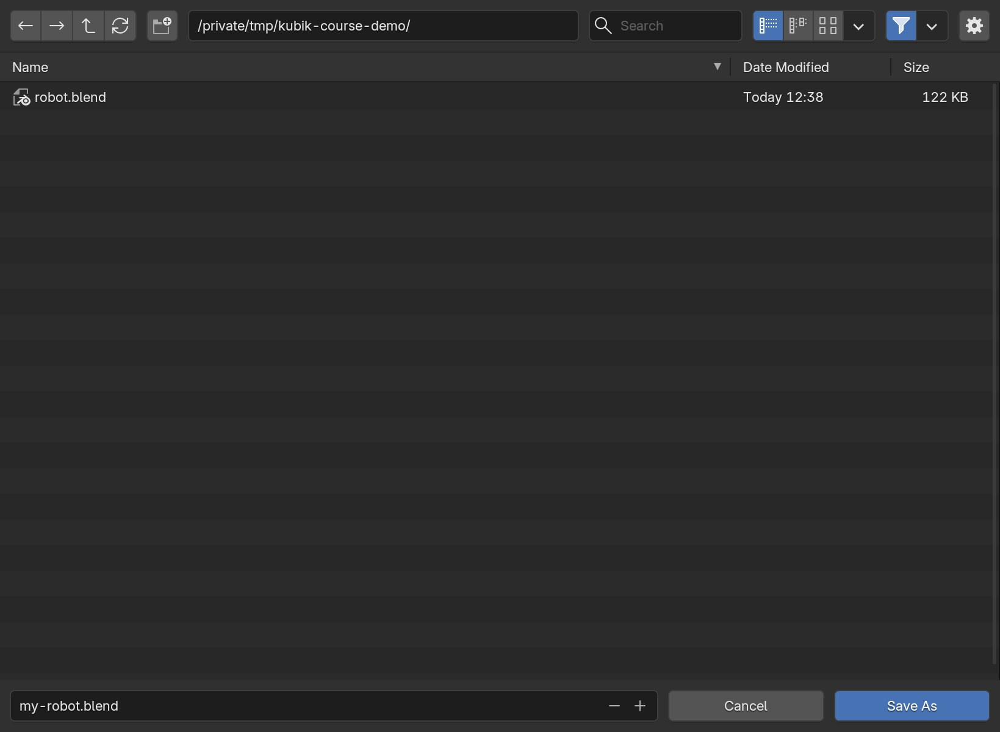
Вместе со взрослым выбери свою папку. Внизу дай файлу имя, например robot.blend, и нажми Save As. Если появится вопрос о замене существующего файла, решите вместе со взрослым.
Проверь: Файл сохранён в выбранной папке. Запомни её вместе со взрослым.
-
File → Open — продолжи завтра
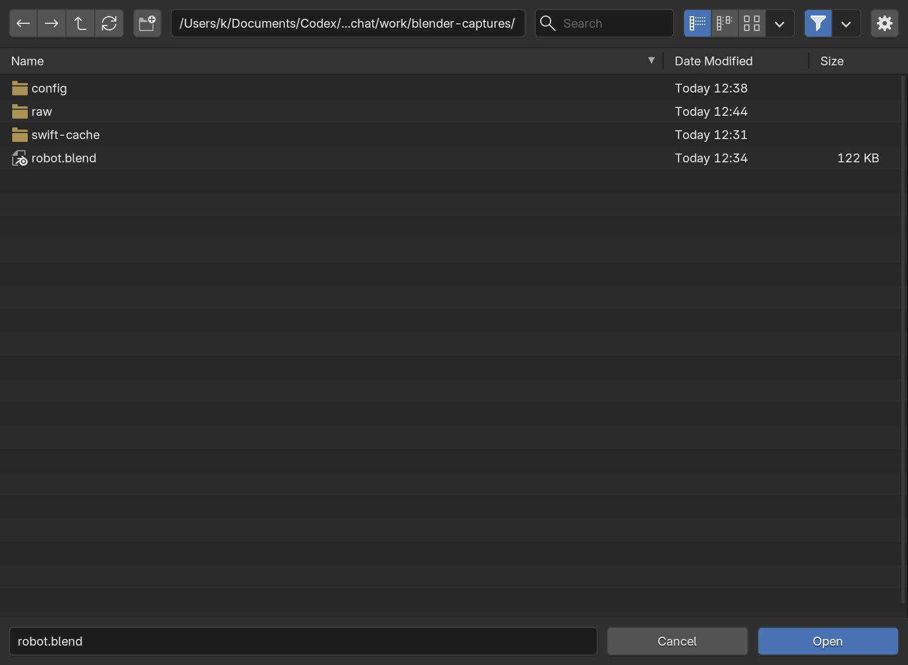
Открой File → Open. Найди свою папку, выбери robot.blend и нажми Open.
Проверь: Твой сохранённый робот снова появился в Blender.


Что ты заметил? Покажи тело и голову. Оба сделаны из кубиков — что у них разное: размер, место или и то и другое? Можно ответить жестом. Это не проверка и не отметка.
Что у меня получилось
Руки, ноги… обнимашки!
Те же кубики могут стать тонкими руками и короткими ногами: меняем их размер и место. Одна деталь уже получилась? Сделаем ей пару!

Пара для каждой детали
Кубики можно вытягивать. Ноги могут быть короткими, а руки — очень длинными.
-
Сделай одну руку
Открой свой файл. Добавь куб: Add → Mesh → Cube. Уменьши его с помощью S. Нажми G, затем X, чтобы поставить руку сбоку. Щёлкни для подтверждения.
Как сделать длинную руку?
Нажми S, затем Z и подвигай мышь. Щёлкни, когда длина понравится. С помощью G, затем Z подними руку к телу. Каждое действие подтверждай отдельным щелчком.
Покажи мне: вытянуть руку
Настоящий Blender 5.2. Нажми на картинку, чтобы рассмотреть её крупнее. Твоя модель может выглядеть иначе.
-
S, затем Z — вытягивай
Выбери руку. Нажми S, затем Z, подвигай мышь и щёлкни. Для ширины тела используй S, затем X.
Проверь: Деталь вытянулась только в одном направлении.
Покажи мне: поставить руку сбоку
Настоящий Blender 5.2. Нажми на картинку, чтобы рассмотреть её крупнее. Твоя модель может выглядеть иначе.
-
G, затем X — сдвинь в сторону

Добавь маленький куб. Нажми G, затем X и передвинь его влево или вправо от тела. Щёлкни, чтобы закончить.
Проверь: Рука стоит сбоку. Красная стрелка показывает ось X.
-
-
Подари руке близнеца
Выбери руку щелчком. Нажми Shift + D, затем X. Передвинь копию на другую сторону и щёлкни. Получилась пара!
Копия убежала или наложилась на руку
После Shift+D начинается движение копии. Esc отменяет только движение: копия остаётся на месте. Если уже нажал Esc, нажми G, затем X и передвинь выбранную копию. Ошибся? Edit → Undo отменит последнее действие.
Покажи мне: передвинуть копию
Настоящий Blender 5.2. Нажми на картинку, чтобы рассмотреть её крупнее. Твоя модель может выглядеть иначе.
-
Shift+D — сделай близнеца

Выбери руку. Нажми Shift+D, затем X и передвинь копию на другую сторону. Подтверди щелчком.
Проверь: Первая рука осталась, а вторая появилась с другой стороны.
Покажи мне: сделать вторую руку
Настоящий Blender 5.2. Нажми на картинку, чтобы рассмотреть её крупнее. Твоя модель может выглядеть иначе.
-
Shift+D — сделай близнеца
Выбери руку. Нажми Shift+D, затем X и передвинь копию на другую сторону. Подтверди щелчком.
Проверь: Первая рука осталась, а вторая появилась с другой стороны.
-
-
Придумай ноги
Добавь маленький куб и передвинь вниз с помощью G, затем Z. Передвинь в сторону: G, затем X. Сделай копию для второй ноги. Или оставь одну широкую ногу — робот-прыгун готов!
Хочу свериться со схемой
На схеме есть и ноги, и отдельные ботинки. Ботинки — дополнительная идея, делать их не обязательно. Важнее, чтобы ты узнал своего героя.
Покажи мне: сравнить с Blender
Настоящий Blender 5.2. Нажми на картинку, чтобы рассмотреть её крупнее. Твоя модель может выглядеть иначе.
-
Собери пару ног

Добавь маленький куб, передвинь вниз: G, затем Z. Сдвинь в сторону: G, затем X. Сделай копию для второй ноги.
Проверь: Под телом появились ноги. Длина и число деталей могут отличаться.
Покажи мне: поставить ноги
Настоящий Blender 5.2. Нажми на картинку, чтобы рассмотреть её крупнее. Твоя модель может выглядеть иначе.
-
Собери пару ног
Добавь маленький куб, передвинь вниз: G, затем Z. Сдвинь в сторону: G, затем X. Сделай копию для второй ноги.
Проверь: Под телом появились ноги. Длина и число деталей могут отличаться.
-
☀ Минутка без экрана. Робот просит зарядку: потянись, помаши руками и потопай ногами.
Сохранить робота и продолжить в другой день
Вместе со взрослым выбери File → Save As (Файл → Сохранить как). Выбери свою папку, назови файл robot.blend и нажми Save As. В следующий раз: File → Open и этот файл. Если он уже сохранён, достаточно File → Save.
Покажи мне: сохранить и снова открыть
Настоящий Blender 5.2. Нажми на картинку, чтобы рассмотреть её крупнее. Твоя модель может выглядеть иначе.
-
File → Save As
Открой File в самом верхнем левом углу и выбери Save As. Для уже сохранённого файла достаточно Save.
Проверь: Открылось окно, где можно выбрать папку и имя файла.
-
Назови и сохрани файл
Вместе со взрослым выбери свою папку. Внизу дай файлу имя, например robot.blend, и нажми Save As. Если появится вопрос о замене существующего файла, решите вместе со взрослым.
Проверь: Файл сохранён в выбранной папке. Запомни её вместе со взрослым.
-
File → Open — продолжи завтра
Открой File → Open. Найди свою папку, выбери robot.blend и нажми Open.
Проверь: Твой сохранённый робот снова появился в Blender.
Что у меня получилось
Привет! Как тебя зовут?
Робот умеет обнимать облака? Или ищет потерянные носки? Придумай, что делает именно твой друг, и подбери деталь нужного размера и на нужном месте.

Теперь у друга есть характер
Глаза, пуговица, антенна — выбери что-нибудь одно. Все украшения повторять не нужно.
-
Выбери суперумение
Расскажи вслух: «Моего робота зовут… Он умеет…» Реши, какая деталь ему пригодится: большая антенна, смешные уши или кнопка для объятий.
-
Добавь свою деталь
Для круглой детали выбери Add → Mesh → UV Sphere (Добавить → Сетка → Сфера). Уменьши её клавишей S. Передвинь с помощью G, затем нужной оси: X, Y или Z.
Как поставить глаза перед лицом?
Переключись на вид спереди: View → Viewpoint → Front. X двигает влево-вправо, Z — вверх-вниз. Y двигает вперёд-назад. Поставь сферу перед головой, проверь сбоку: View → Viewpoint → Right. Взрослый может помочь с глубиной. Второй глаз можно скопировать через Shift+D, затем X.
Покажи мне: проверить глаз спереди и сбоку
Настоящий Blender 5.2. Нажми на картинку, чтобы рассмотреть её крупнее. Твоя модель может выглядеть иначе.
-
Поставь глаз спереди

На виде Front двигай шарик по X и Z, чтобы поставить его на лицо. Затем G и Y помогут вынести его перед головой.
Проверь: Глаз виден на лице, а не спрятан внутри головы.
-
Front — спереди, Right — сбоку
Нажми Front, чтобы смотреть на лицо. Right покажет робота сбоку. Это поворачивает твой взгляд, а не модель.
Проверь: Над рабочей областью написано Front Orthographic или Right Orthographic.
-
Проверь глубину сбоку

Открой View → Viewpoint → Right. На виде сбоку проверь, что глаз выступает перед головой. G, затем Y двигает его вперёд-назад.
Проверь: Шарик касается передней стороны головы. Потом вернись в Front.
Покажи мне: добавить шарик
Настоящий Blender 5.2. Нажми на картинку, чтобы рассмотреть её крупнее. Твоя модель может выглядеть иначе.
-
Add → Mesh → UV Sphere

Открой Add, затем Mesh. Выбери UV Sphere — это шарик для глаза или антенны.
Проверь: В сцене появился шар. Уменьши его с помощью S.
-
Поставь глаз спереди
На виде Front двигай шарик по X и Z, чтобы поставить его на лицо. Затем G и Y помогут вынести его перед головой.
Проверь: Глаз виден на лице, а не спрятан внутри головы.
-
-
Покажи настроение
Хочешь, чтобы робот махал? Выбери руку, нажми R, затем Y, немного подвигай мышь и щёлкни. Или оставь как есть и покажи другу любимую деталь.
Ещё одна идея, если хочется
Добавь куб для стержня антенны и сферу сверху. Или сделай кубические уши. Зрачки и пуговица на схеме — необязательные украшения. Достаточно одной своей детали.
Покажи мне: смешная антенна
Настоящий Blender 5.2. Нажми на картинку, чтобы рассмотреть её крупнее. Твоя модель может выглядеть иначе.
-
Add → Mesh → UV Sphere
Открой Add, затем Mesh. Выбери UV Sphere — это шарик для глаза или антенны.
Проверь: В сцене появился шар. Уменьши его с помощью S.
-
R, затем Y — помаши рукой

Выбери руку, нажми R, затем Y. Чуть подвигай мышь и щёлкни. Можно оставить руки прямыми.
Проверь: Повернулась только выбранная рука.
Хочу сделать улыбку кривой
Это дополнительный трюк: кривая похожа на мягкую верёвочку. Сначала она прямая, а ты опустишь её серединку и получишь улыбку. Если сегодня хватит — робот уже готов и без неё!
Смотри на робота спереди. В примере ниже голова стоит над центром сцены; если твоя голова в другом месте, передвинь улыбку к ней. Открывай картинки по очереди.
Покажи мне: сделать улыбку кривой
Настоящий Blender 5.2. Нажми на картинку, чтобы рассмотреть её крупнее. Твоя модель может выглядеть иначе.
-
Add → Curve → Bézier

В режиме Object Mode открой Add над рабочей областью, наведи на Curve и выбери Bézier. Это новая гибкая линия, а не куб. Если она спряталась в теле робота, всё в порядке: сейчас мы её передвинем.
Проверь: В списке объектов появилась BézierCurve; новая кривая выбрана.
-
Положи линию на лицо

Пока кривая выбрана, нажми R, X, 90, Enter — поверни её к лицу. Уменьши клавишей S, подними к голове через G, Z, а через G, Y вынеси чуть перед лицом. Для робота на фото подошли S 0.45, G Z 1.85 и G Y -0.85. У твоего робота числа могут отличаться.
Проверь: Линия лежит поперёк лица ниже глаз. Если её не видно, сдвинь немного вперёд через G, Y.
-
Добавь точку посередине

Нажми Tab — это Edit Mode. Нажми A, затем V и выбери Automatic: линия выпрямится. Нажми F3, напиши Subdivide и Enter. Нажми Alt+A, чтобы снять выделение, и щёлкни по средней точке. Она станет оранжевой, как на фото.
Проверь: У линии три главные точки; выбрана только средняя.
-
Опусти серединку

Когда выбрана только средняя точка, нажми G, затем Z, немного опусти мышь и щёлкни. Если потянулся край, Ctrl+Z вернёт точку назад: снова щёлкни по середине.
Проверь: Между двумя краями есть третья точка ниже — получилась дуга улыбки.
-
Добавь верёвочке толщину
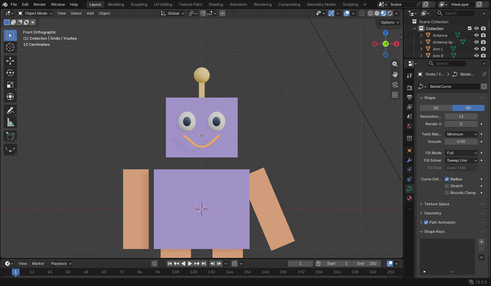
Нажми Tab, чтобы вернуться в Object Mode. Пока выбрана улыбка, справа нажми зелёный значок кривой, открой Geometry → Bevel и поставь Depth примерно 0.035. Если строку Bevel не видно, прокрути панель вниз. Число можно менять: толстая улыбка смешнее!
Проверь: Тонкая линия стала круглой и видимой на лице. На фото справа показан зелёный значок и раздел Geometry, который надо открыть.
-
Проверь улыбку спереди

Посмотри на лицо спереди. Если улыбка оказалась за головой, выбери кривую и нажми G, Y, чтобы вынести её вперёд. Если велика или мала — S поможет изменить размер.
Проверь: У робота есть улыбка. Сохрани проект через File → Save As!
Покажи мне: повернуть руку
Настоящий Blender 5.2. Нажми на картинку, чтобы рассмотреть её крупнее. Твоя модель может выглядеть иначе.
-
R, затем Y — помаши рукой
Выбери руку, нажми R, затем Y. Чуть подвигай мышь и щёлкни. Можно оставить руки прямыми.
Проверь: Повернулась только выбранная рука.
-

☀ Минутка без экрана. Отдохни от экрана и придумай роботу смешной голос. Бип-буп!
Сохранить робота и продолжить в другой день
Вместе со взрослым выбери File → Save As (Файл → Сохранить как). Выбери свою папку, назови файл robot.blend и нажми Save As. В следующий раз: File → Open и этот файл. Если он уже сохранён, достаточно File → Save.
Покажи мне: сохранить и снова открыть
Настоящий Blender 5.2. Нажми на картинку, чтобы рассмотреть её крупнее. Твоя модель может выглядеть иначе.
-
File → Save As
Открой File в самом верхнем левом углу и выбери Save As. Для уже сохранённого файла достаточно Save.
Проверь: Открылось окно, где можно выбрать папку и имя файла.
-
Назови и сохрани файл
Вместе со взрослым выбери свою папку. Внизу дай файлу имя, например robot.blend, и нажми Save As. Если появится вопрос о замене существующего файла, решите вместе со взрослым.
Проверь: Файл сохранён в выбранной папке. Запомни её вместе со взрослым.
-
File → Open — продолжи завтра
Открой File → Open. Найди свою папку, выбери robot.blend и нажми Open.
Проверь: Твой сохранённый робот снова появился в Blender.
Что у меня получилось
Цветной друг и первое фото
Форма робота уже готова: из кубиков разных размеров получились разные детали. Сегодня выбираем любимые цвета. А взрослый поможет сфотографировать робота внутри Blender.

Твой робот — твои цвета
Можно оставить один цвет или устроить радугу. Это схема, а не обязательный образец.
-
Выбери любимый цвет
Щёлкни по телу робота. Вместе со взрослым открой Material Properties — вкладку с иконкой красного шарика справа. Нажми New, если материала ещё нет. Найди Base Color и выбери цвет.
Я поменял цвет, но робот серый
В правом верхнем углу рабочей области включи Material Preview — третий из четырёх значков-шариков. Подожди, пока появится цвет. Остальные настройки материала пока не нужны.
Покажи мне: включить цветной вид
Настоящий Blender 5.2. Нажми на картинку, чтобы рассмотреть её крупнее. Твоя модель может выглядеть иначе.
-
Включи Material Preview
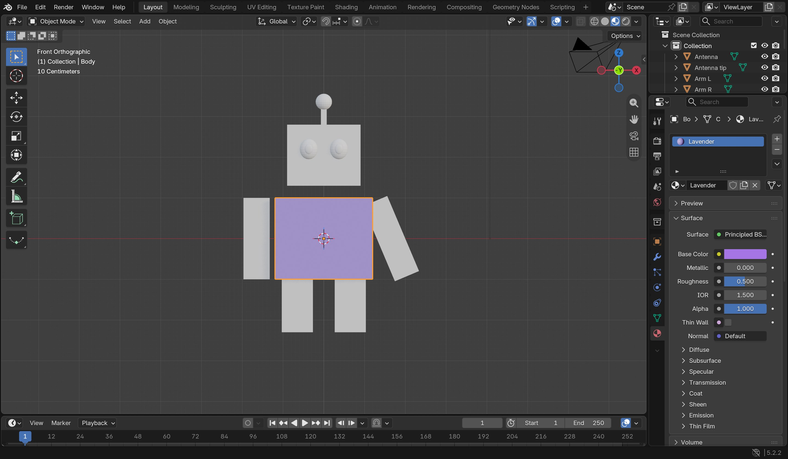
Вверху справа над рабочей областью нажми третий из четырёх шариков — Material Preview. Подожди, пока Blender покажет материалы.
Проверь: Цвет виден на модели, а не только в настройках.
Покажи мне: покрасить робота
Настоящий Blender 5.2. Нажми на картинку, чтобы рассмотреть её крупнее. Твоя модель может выглядеть иначе.
-
Открой красный шарик и нажми New
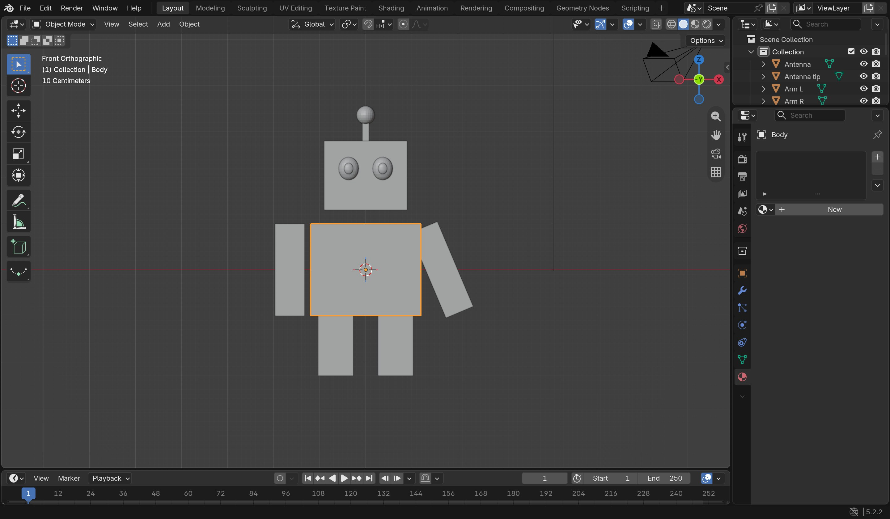
Выбери тело. Справа нажми вкладку Material Properties с красным шариком. Если материала ещё нет, нажми New.
Проверь: Вместо кнопки New появились настройки материала.
-
Base Color — любимый цвет
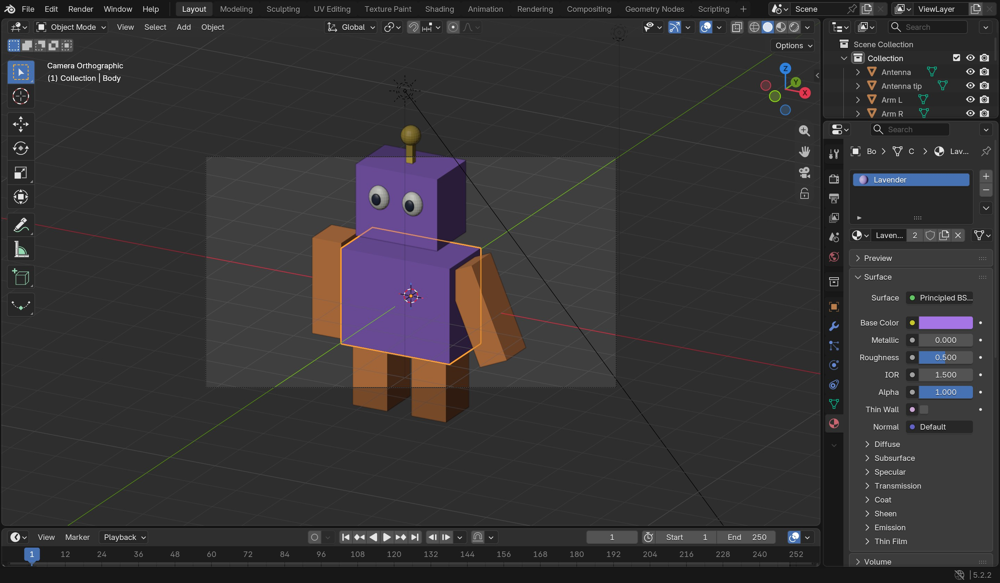
В разделе Surface нажми цветной прямоугольник рядом с Base Color. В открывшейся палитре выбери цвет, затем щёлкни рядом, чтобы закрыть её.
Проверь: Прямоугольник Base Color показывает твой цвет.
-
Включи Material Preview
Вверху справа над рабочей областью нажми третий из четырёх шариков — Material Preview. Подожди, пока Blender покажет материалы.
Проверь: Цвет виден на модели, а не только в настройках.
-
-
Одень другую деталь
Выбери голову или руку. Назначь ей цвет тем же способом. Если хочешь, используй тот же материал из списка рядом с кнопкой New.
Почему поменялись сразу две детали?
У копий бывает общий материал. Это удобно для одинаковых рук. Чтобы поменять только одну, взрослый нажимает число пользователей рядом с именем материала — появится отдельная копия. Затем можно выбрать другой Base Color.
Покажи мне: сделать отдельный материал
Настоящий Blender 5.2. Нажми на картинку, чтобы рассмотреть её крупнее. Твоя модель может выглядеть иначе.
-
Отдельный цвет для одной детали

Выбери другую деталь. В Material Properties выбери существующий материал из списка. Если он общий и нужен другой цвет, нажми число рядом с его именем — получится отдельная копия.
Проверь: После копирования материала цвет одной руки можно менять отдельно.
Покажи мне: покрасить другую деталь
Настоящий Blender 5.2. Нажми на картинку, чтобы рассмотреть её крупнее. Твоя модель может выглядеть иначе.
-
Отдельный цвет для одной детали
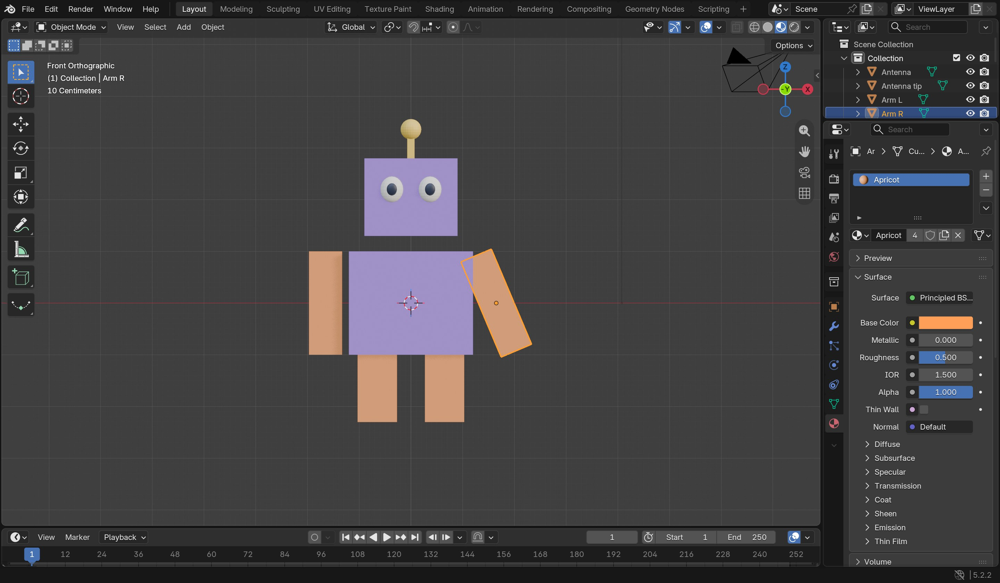
Выбери другую деталь. В Material Properties выбери существующий материал из списка. Если он общий и нужен другой цвет, нажми число рядом с его именем — получится отдельная копия.
Проверь: После копирования материала цвет одной руки можно менять отдельно.
-
-
Сохрани и устрой премьеру
Выбери File → Save (Файл → Сохранить). Покажи робота и расскажи, что он умеет. Для фотографии открой подсказку ниже вместе со взрослым.
Для взрослого: камера, свет и PNG
Сначала сохраните .blend. Выберите удобный вид, чтобы робот целиком помещался в рабочей области. Если камеры нет: Add → Camera. Сделайте её активной через View → Cameras → Set Active Object as Camera. Затем View → Align View → Align Active Camera to View. Проверьте рамку: View → Cameras → Active Camera. Добавьте или переместите свет; для простого старта можно Add → Light → Sun и повернуть его. Выполните Render → Render Image. Если темно или робот обрезан, закройте окно результата, поправьте свет или камеру и повторите. В окне результата: Image → Save As, выберите PNG, имя robot.png и сохраните. Сохранение .blend не сохраняет PNG. Если настройка утомляет, оставьте фото на другую встречу — миссия уже удалась.
Покажи мне: сделать фото вместе
Настоящий Blender 5.2. Нажми на картинку, чтобы рассмотреть её крупнее. Твоя модель может выглядеть иначе.
-
Совмести камеру с видом
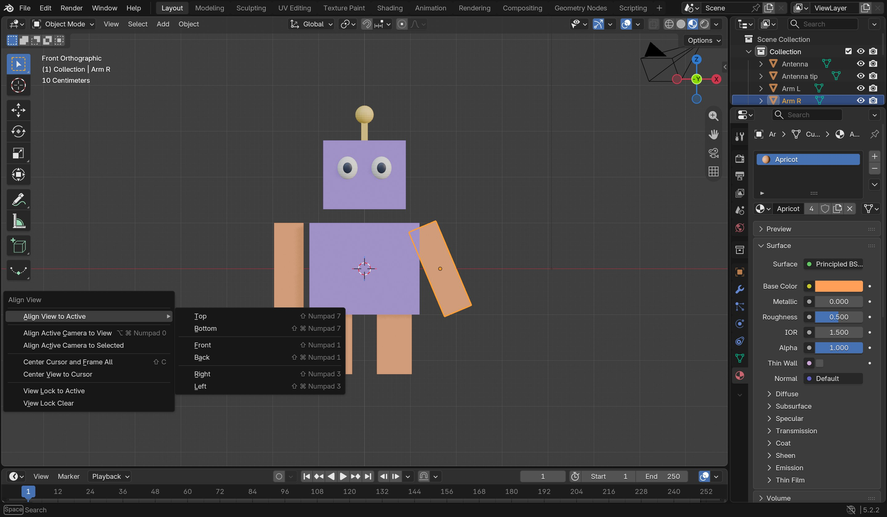
Вместе со взрослым выбери удобный вид. Открой View → Align View → Align Active Camera to View. В стандартной сцене камера уже есть.
Проверь: Камера смотрит туда, куда ты только что смотрел.
-
Проверь рамку камеры

Открой View → Cameras → Active Camera. Если камеры нет, сначала Add → Camera, затем View → Cameras → Set Active Object as Camera.
Проверь: Весь робот помещается внутри рамки. За её пределами в фото ничего не попадёт.
-
Добавь солнышко

Со взрослым открой Add → Light → Sun. Это простой источник света для первого фото.
Проверь: В сцене и списке объектов появился Sun.
-
Поверни свет и проверь яркость

Выбери Sun. Со взрослым поверни его клавишей R. Во вкладке зелёного значка света параметр Strength меняет яркость. Начните, например, с 2.
Проверь: Свет есть; окончательную яркость проверим на фото.
-
Render → Render Image

Открой Render в самой верхней строке и выбери Render Image. Подожди, пока Blender посчитает картинку.
Проверь: Появилось изображение из камеры. Если темно или тесно, поправьте свет или камеру и повторите.
-
Посмотри на первое фото

Это настоящий результат нашей простой модели в Blender. У твоего робота могут быть другие цвета, детали и ракурс.
Проверь: Модель видна целиком. Сначала сохрани её .blend, а сейчас отдельно сохраним картинку.
-
Image → Save As
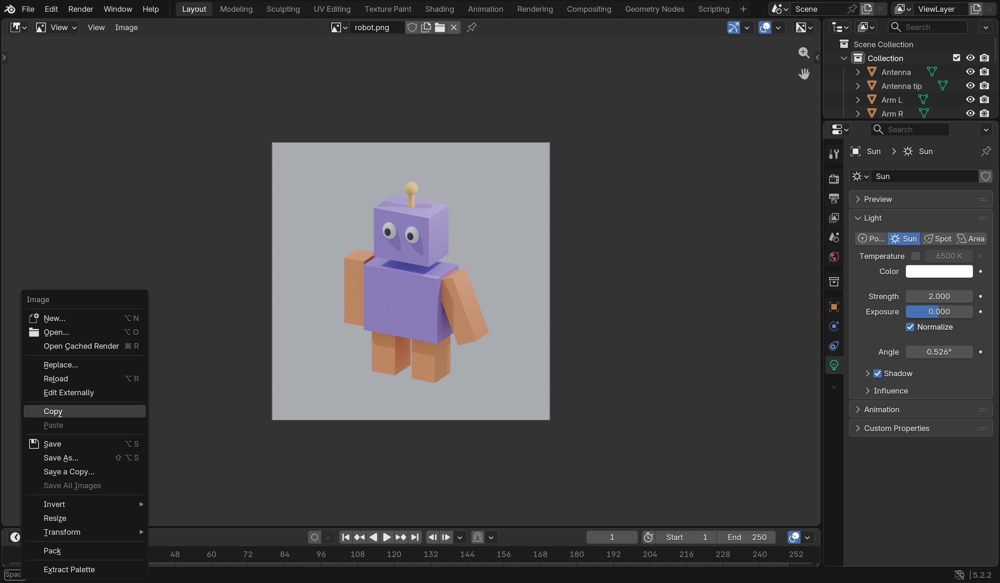
В окне готового изображения открой Image и выбери Save As. Сохранение проекта через File → Save не сохраняет эту картинку.
Проверь: Открылось окно сохранения изображения.
-
Сохрани robot.png
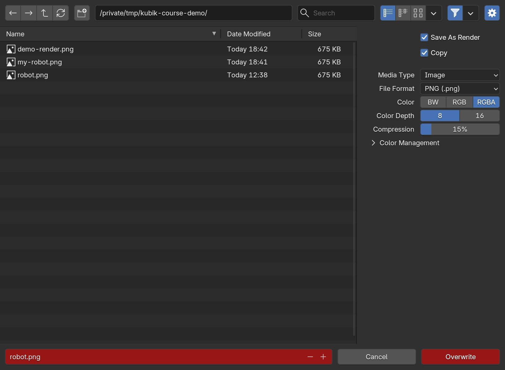
Выбери свою папку. Справа в File Format выбери PNG, внизу дай картинке имя, например robot.png. Если кнопка красная и пишет Overwrite, такое имя уже занято: придумай новое. Затем нажми Save As Image.
Проверь: В папке есть отдельная картинка robot.png — её можно показать семье.
Покажи мне: сохранить свою работу
Настоящий Blender 5.2. Нажми на картинку, чтобы рассмотреть её крупнее. Твоя модель может выглядеть иначе.
-
File → Save As
Открой File в самом верхнем левом углу и выбери Save As. Для уже сохранённого файла достаточно Save.
Проверь: Открылось окно, где можно выбрать папку и имя файла.
-
Назови и сохрани файл
Вместе со взрослым выбери свою папку. Внизу дай файлу имя, например robot.blend, и нажми Save As. Если появится вопрос о замене существующего файла, решите вместе со взрослым.
Проверь: Файл сохранён в выбранной папке. Запомни её вместе со взрослым.
-


☀ Минутка без экрана. Устрой выставку: поставь рядом настоящую игрушку и познакомь её со своим роботом.
Сохранить робота и продолжить в другой день
Вместе со взрослым выбери File → Save As (Файл → Сохранить как). Выбери свою папку, назови файл robot.blend и нажми Save As. В следующий раз: File → Open и этот файл. Если он уже сохранён, достаточно File → Save.
Покажи мне: сохранить и снова открыть
Настоящий Blender 5.2. Нажми на картинку, чтобы рассмотреть её крупнее. Твоя модель может выглядеть иначе.
-
File → Save As
Открой File в самом верхнем левом углу и выбери Save As. Для уже сохранённого файла достаточно Save.
Проверь: Открылось окно, где можно выбрать папку и имя файла.
-
Назови и сохрани файл
Вместе со взрослым выбери свою папку. Внизу дай файлу имя, например robot.blend, и нажми Save As. Если появится вопрос о замене существующего файла, решите вместе со взрослым.
Проверь: Файл сохранён в выбранной папке. Запомни её вместе со взрослым.
-
File → Open — продолжи завтра
Открой File → Open. Найди свою папку, выбери robot.blend и нажми Open.
Проверь: Твой сохранённый робот снова появился в Blender.
Что у меня получилось
Ура! У тебя появился 3D-друг.
Что тебе больше всего понравилось придумывать? Если хочется ещё — сделай роботу смешную шляпу из куба. А можно просто полюбоваться своей работой.
Для взрослых: подготовка и помощь
Это четыре отдельные встречи, а не один длинный урок. В 6–7 лет читайте шаги вслух и помогайте с клавиатурой; в 8–10 лет предложите ребёнку попробовать самому. Ориентир — 15–25 минут вместе с короткой разминкой. Устали раньше? Сохраните файл и продолжите в другой день.
Перед началом
- Запустите Blender 5.2 LTS на компьютере, выберите стандартный Layout и Object Mode. В уроке используются английские названия меню с русскими пояснениями.
- Проверьте мышь с колёсиком. На iPad читаем курс, а Blender используем на компьютере.
- Сохраните первый файл вместе. Достаточно одной папки и файла robot.blend.
- По желанию потренируйтесь сами ставить камеру и свет. В четвёртой миссии эта часть предназначена для взрослого.
Что считать успехом
Главное открытие — один и тот же куб может стать разными частями, если поменять размер и место. Спросите: «Чем похожи тело и голова? Что у них разное?» Ребёнок может ответить словами, жестом или показать на модели; ответ не влияет на отметки. Копирование и цвет помогают закончить робота, но не становятся новыми обязательными понятиями. Помощь взрослого не отменяет успех. Фото не обязательно; настройка камеры и света может подождать.
Об иллюстрациях
Сиреневый герой — иллюстрация для вдохновения. Картинки внутри миссий — авторские схемы форм. В раскрываемых подсказках «Покажи мне» — настоящие снимки интерфейса Blender 5.2, сделанные на отдельной учебной модели. Их можно увеличить. Модель ребёнка получится другой, и это хорошо. Скругления, блики и украшения иллюстрации повторять не нужно.
Если ребёнок хочет больше
Предложите другую пропорцию тела, кубическую шляпу или ещё один глаз. Точный ввод координат, Edit Mode, модификаторы и сложные материалы для этой недели не нужны.
Справка Blender для взрослых
Перемещение, вращение и размер · Копирование · Материалы · Камера